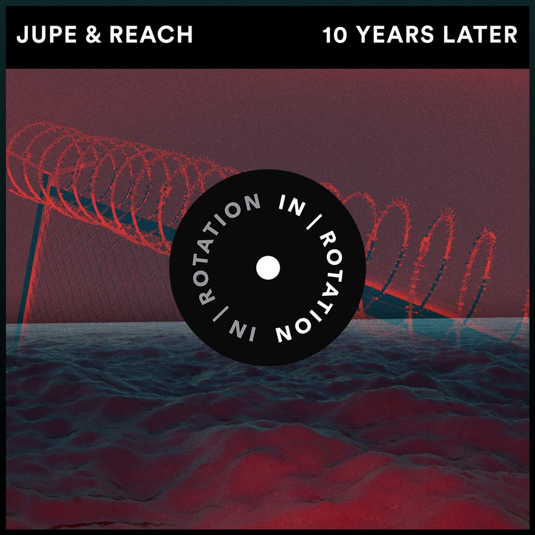

Jupe and Reach Put Their Own Spin on Free-Form Bass With “Ten Years Later” on IN / ROTATION


Jupe and Reach certainly make for a killer future bass team. Testing the waters earlier this year with the aptly titled “Beast” on Monstercat, they’ve reunited for what’s arguably one of the biggest releases for the both of them yet, “Ten Years Later.”
Both artists have been kicking goals on their own terms. Incredibly, Jupe was propelled into the future bass elite during his mid-teens, earning swift support from acts like NGHTMRE, Madeon, Porter Robinson, and Noisia. Not surprisingly, he’s described it as a “wild ride.”
“These are people I’ve looked up to for a long time, and knowing that they supported my music is almost like a dream,” he says. “It was overwhelming at first, but with time, I grew accustomed to the feeling of rising upward rapidly. I’m thankful to experience that at an early age, because it’s played a role in my adult life now. It’s really helped me conquer tasks I used to be afraid of.”
Meanwhile, Reach has scored accolades of his own from the likes of Dillon Francis and Boombox Cartel, and is one of the rising stars releasing music on the Monstercat stable. He says the partnership with Jupe stretches back several years to when they began chatting production online, and their latest collab, “Ten Years Later,” was snatched up by IN / ROTATION in its early stages.
“I was honestly so surprised at how fast IN / ROTATION got behind the track,” Reach tells us. “They really dug the track before we even fleshed out the intro or breakdown, so they really believed in it from the get-go—which was refreshing, to say the least.”
With Jupe set to debut at EDC Orlando in November, we thought it the perfect time to catch up with him and Reach to chat about their latest explosive studio collaboration.
Jupe and Reach’s “10 Years Later” is available here.
You’ve both been on the rise the past few years. How has 2018 played out so far?
Jupe: I have experienced tons of ups and downs, but in the end, that only makes me try harder and become a better person. The end of this year and the beginning of next is gonna be even more insane, after I start getting out there meeting people that I’ve connected with from the internet. It’s just gonna be GREAT.
Reach: 2018 has been great to us. We’ve been working on tons of new tunes and churning out really wonky and cool shit. I think my main focus was to really step out of my comfort zone a bit this year and experiment with sounds that I haven’t really explored before, finding new ways to express myself, and in ways that are new and refreshing to the music scene and myself.
Tell us your musical stories so far.
Jupe: I used to be into techno back in the day, but my love for electronic music started super early. Shortly after Skrillex put out his My Name Is Skrillex LP, that’s when I decided I wanted to do whatever he was doing. Knife Party, Skrillex, Diplo, Dillon Francis, and some other cool cats were some of my main influences growing up. They really pushed me forward into the person I am today.
Reach: I started around 10 years ago, in middle school. I was about 12 years old, working in my bedroom, after listening to some old Doctor P, Flux Pavilion, and Skrillex tunes. When I heard music like this, I just had no idea how it was made. I was so fascinated by the sounds, that it really motivated me to start my journey in electronic music. The fact that I started my musical journey 10 years ago was my reasoning for naming the song “10 Years Later.”
How would you describe your respective sounds to the uninitiated?
Jupe: My sound is definitely melody-driven and bass-heavy—but it depends, really. I think our styles fit well together, because we just try to be weird and create different music. Most of the time, it comes out sounding awesome, with my melody forte and Reach’s heavy-bass design. In the end, it creates an audio experience.
Reach: I would say my sounds are very aggressive and sometimes a bit obnoxious—but interesting and heavy-hitting. Either you like it or you don’t, and that’s how I love it! I think our styles mesh really well because we come from the same background, musically, and we both started in the bass scene. I know Jupe started with dubstep, as did I, so we both focus a lot on sound design and the aesthetics of the sounds we create.
“Ten Years Later” is a huge track, for sure. Tell us the story behind it.
Jupe: I made a work in progress that I thought was cool, and Reach said, ‘’Hey, send me that tune; it sounds sick.” A week or two after I played it, and the rest was history.
Reach: That’s pretty much how it happened. I know me and Jupe were listening to a lot of free-form bass tunes, and the drop was really inspired by many of the artists emerging in that genre, with a little twist of our own on top.
What’s coming up next?
Jupe: Lots and lots of new music that I am amped about. Also, a few shows with friends that I’m influenced by!
Reach: Got some collabs with a lot of cool dudes—some very well known, some just emerging now—but all very talented friends and artists… The music is insane, and I can’t wait to show it to the world.
Follow Jupe on Facebook | Twitter | SoundCloud
Follow Reach on Facebook | Twitter | SoundCloud
Follow IN / ROTATION on Facebook | Twitter | SoundCloud